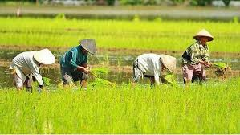
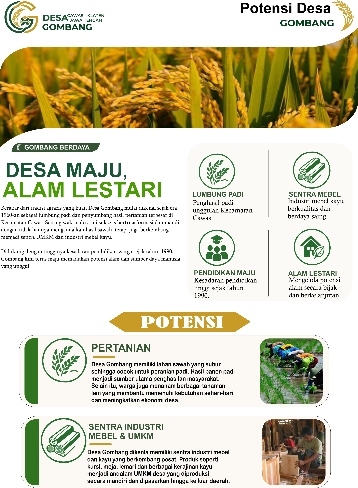
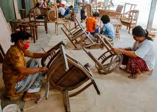

Sejarah Singkat Desa
Desa Gombang terletak di wilayah strategis Kecamatan Cawas, Kabupaten Klaten. Sejak zaman dahulu, masyarakat Desa Gombang dikenal memiliki nilai adat dan komitmen gotong royong yang sangat kuat, terutama dalam mengembangkan sektor pertanian dan kerajinan industri rumah tangga tradisional. Melalui integrasi teknologi informasi baru ini, Pemerintah Desa berkomitmen kuat menuju era transparansi dan efisiensi publik yang modern.
Visi & Misi Utama
VISI:
"Mewujudkan tata kelola pemerintahan Desa Gombang yang mandiri, produktif, sejahtera, serta transparan melalui akselerasi dan optimalisasi sistem digitalisasi pelayanan warga."
MISI:
- Meningkatkan kualitas pelayanan administrasi publik yang cepat, mudah, akurat, dan bebas pungli berbasis platform digital mandiri.
- Mendorong percepatan pembangunan sarana infrastruktur fisik desa secara merata dan proporsional di setiap area RT/RW.
- Mendukung penuh perluasan jaringan pemasaran produk kerajinan ekonomi kreatif dari pelaku UMKM lokal menuju pasar digital nasional.
Potensi Unggulan Desa
Selain sejarah dan visi misi, Desa Gombang memiliki berbagai potensi yang terus dikembangkan untuk kesejahteraan warga:

Pertanian
Lahan persawahan produktif yang menjadi lumbung pangan lokal Desa Gombang.

Download Poster{kind=link}

Sektor Mebel
Sentra kerajinan kayu berkualitas tinggi hasil karya pengrajin unggulan desa.